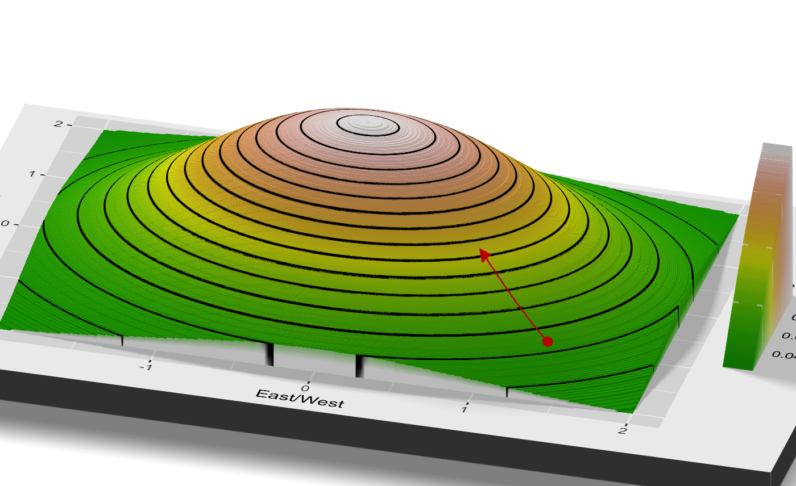
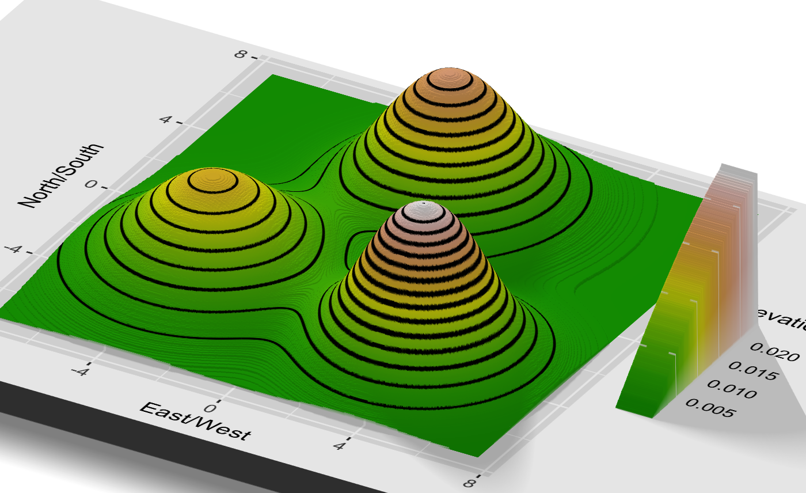

The Perils of Overly Local Optimization
WORK IN PROGRESS, scattered notes/plots here visualized, will be turned into proper post soon. Aims to explain in layman’s terms the way that the addition of noise can help gradient descent escape spurious optima (and how this has an intuitive interpretation in our own lives)
Outline
Note, this was openly inspired by the writings of Tim Harford. I ound his descriptiption of the London Tube Strike and its implications while struggling through the study of Langevin diffusions, and I had been meaning to try and show some visualizations of noisy optimization for a while. He’s a wonderful popular economics communicator, and a lot of fun to read.
In general, try and think of any and all images you can include! minimize text.
The Perfect Scrambled Eggs
(or “our optimized lives”)
- [rw]My morning routine is perfectly optimized, a blend of art and science. I’ve settled on an order in which to take the ingredients for scrambled eggs, the exact selection of dishes to use to minimize washing, and the fact that my silver bowl has sides just low enough that beaten egg could escape, and that raw eggs go in the red bowl. I didn’t set out to figure this out, I just made scrambled eggs every morning for years, and over time saw tiny choices that make it go a little smoother.
To add…
Disruption, and the London Subway Strike
On February 4th, 2014, the workers of the London Tube (their underground subway), went on strike, forcing a number of station closures throughout the city. For three days, a subset of commuters found their usual routes to work blocked, and were forced to find alternatives. After the strike, the stations reopened, and life went back to normal.
But three economists saw the opportunity for a natural experiment: only certain commuters were disrupted by the closure, and using the tracking data collected by the Tube, their movements could be compared to the unaffected group. And surprisingly, life didn’t go right back to normal after the ending of the strike. The ID card data showed that some of the impacted group stuck with their newly discovered routes, and their commuting time decreased as a result.
The station closures forced commuters to break from their finely tuned routines, but a surprising number found themselves dragged unnwillingly along a route that proved faster than the one they had been taking for years. The economists even claim that on net, the strike decreased the total commuting time.1 Even if only a small fraction found new routes, their new route would benefit them for years to come, and taking this chance only required disruption for a couple of days.
This story provides a neat way to frame the mathematical challenge of optimization, and in particular, why so many optimization algorithms involve random noise, a choice which initially seems bizarre. I’ll begin by describing how to think about optimization in intuitive terms, and then detail how that corresponds with the common mathematical algorithms, and why the London Tube Strike provides a neat analogy to very real mathematical properties.2
The Mathematical Framework of Optimization
The purpose of this post is to show how this concept can be naturally articulated in a mathematical framework.3 We are describing the challenge of optimization. Here’s a sample definition, from the DeepAI website.
Mathematical optimization is the process of maximizing or minimizing an objective function by finding the best available values across a set of inputs.
- For London commuters, their “objective function” might be the duration of the commute,4, and the “available values across a set of inputs” might be the route they take.
- If we want to find the highest peak in a mountain range (an example we’ll discuss in detail in the next section), the input might be the choice of latitude and longitude, and the objective the elevation at that point.
- When baking chocolate chip cookies, the possible inputs might be the amount of each ingredient, and the order in which they are combined, and the objective function might be the tastiness of the resulting cookie. This isn’t quite a joke, Google once ran a cookie optimization experiment along these lines.5
Optimization is vitally important in applied mathematics and statistics, but it can be quite hard. The vast increase in computational power has broadened our horizons for what optimization challenges are possible, but many useful problems remain out of our reach.
Generally, in optimization, we assume that we can check the value of the objective function at some chosen input. We can try a certain route on the subway and time the duration, we can bake a batch of cookies and eat them, and we will imagine that we have some computer which takes in latitude and longitude coordinates and spits out the altitude (this is called a “query” to the objective function, or perhaps “oracle”).
Our naive optimization strategy might be to just try a bunch of points. Maybe we can define a grid of latitude and longitude coordinates, check the elevation of each one, and pick the highest. But this naive approach only works when the potential choices of input are sufficiently narrow. In particular, we look at the “dimension” of the input space. Latitude and longitude represent a mere 2-dimensions. The number of points within an exhaustive “grid” of inputs grows exponentially with the dimension of the input. Cookies are comprised by some dozen ingredients. The famous Jacques Torres cookie recipe has \(12\) ingredients. If we wanted to try all combinations of a mere five levels of each ingredient, that would be over two hundred thousand possibilities, which is a bit much for even the hungriest baker.
We are constantly confronting optimization challenges in our own life, and we rarely take this naive approach. Instead, we tend to look for small local optimizations, whose benefits we can easily identify.
Locality in Optimization
Imagine if we bite into a warm cookie, and the text the texture is just right, but there’s not enough chocolate.(more flowery language here?) We wouldn’t just throw up our hands and start from scratch… we’d add more chocolate! It’s hard to look at a cookie recipe, and imagine what the result will taste like. But we can taste a recipe, and imagine what a small tweak would taste like.
The “locality” in optimization refers to “closeness” in the input space. In latitude and longitude, this would be literal distance, while the definitions are a bit less cookie in the space of cookie ingredients and subway commutes. Broadly, we are pretty good at understanding. If we increase the amount of chocolate, we now they’ll taste a bit more chocolate-y than they do now. If we increase the amounts of chocolate, butter, baking soda, reduce the amount of flour, and tweak the balance between brown and cane sugar, are we confident we know what the result will taste like?
In the London Tube experiment, the researchers place some of the blame on the “stylized nature” of the Tube map displayed to commuters. Its spatial distortions make it difficult to spot major inefficiencies in their route, without some external push. By comparison, we can usually estimate the impact of these “local” changes by ourselves. If we get off one stop earlier, maybe our walk to work increases by a minute but we avoid the wait at a crowded station. These slight changes are a bit like increasing just a single ingredient in a cookie.

Personally, this describes my relationship with my own food. TO ADD MORE…
- In my own life, I find this with food all the time. I have a set rotation of dishes I love, that fit my criteria (hassle-free ingredients, saves well for leftoers, etc). I’m happy to make small chaanes to what I eat. I recently realized how well a lone, unadorned sweet potato went with some of my staples. That’s a one step addition, and I can evaluate its impact as I walk the aisles of the store. Sure enough, it quickly became a staple.
- However, I’m sure there are many full dishes out there that would be just as good as my current rotation. But to find a new dish is a risk. There’s no way for me to see all the the links in the chain. Will the ingredients be easy to find? Will I find the cooking burdensome? What will the end result taste like? Are my cooking supplies well suited to the task?
Before, we imagined a challenge where we tried to find a peak of a mountain range, using a computer which could tell us the elevation of any chosen input point. Let’s imagine that it also tells us the slope of the incline at that point (“which direction is down”). This better reflects our intuition for local optimization, but it’s also not a large change to the game, because we could always simply query the elevation in a small area around our point, and gauge the slope ourselves. Imagine that we are hiking with an altimeter, and we can look around us and see the shape of the nearby slope. However, we can’t just look around and find a faraway peak, because we’re stuck in the forests of the Appalachians rather than the sheer granite ofthe Sierra Nevada. Our intuition tells us the optimization algorithm which is natural: from wherever we are, “go up”. This intuitive algorithm is called “gradient ascent”.
Gradient Ascent
Here’s what gradient ascent looks like as a step-by-step process (although, its simplest summary is simply “go up”).
We begin at some initial point. We find the direction of steepest ascent from that point, i.e. up the hill (the magnitude and direction of steepest ascent form the “gradient” vector). Then, we walk for a period in that direction (the amount is determined by the “step size”, and how steep the ascent actually is). Once we finish walking, we are at a new point, and we repeat this process again (we determine direction of steepest ascent, and walk in that direction). Once we reach a point that is essentially flat, there is no more direction of steepest ascent to follow, and we are done (this is called “convergence”).
This is the intuitive definition of what it means to make local changes. Wherever we are, we think “what small change could we make to make this better?” If our cookies are too salty, we add a bit less salt, but we don’t start over from scratch.
Mathematical Definition
Imagine we are at some point \(x \in \mathbb{R}^d\) (meaning, \(x\) is a point in \(d\)-dimensional space). (Maybe in English first?)
Here’s a mathematical definition of a crude version of gradient descent.6
- Let \(f: \mathbb{R}^d \to \mathbb{R}\) be our objective function. Let \(\eta > 0\) be our scaling constant. We begin at some initial point \(x^{(0)} \in \mathbb{R}^d\). For \(k = 0, \ldots,\), until convergence, repeat steps 2 through 4(?).
- Compute the gradient \(\nabla f(x^{(k)})\).
- Set \(x^{(k+1)} \leftarrow x^{(k)} + \eta \nabla f(x^{(k)})\).
- If \(\nabla f(x^{(k)})\) is sufficiently small, halt the algorithm, and select \(x^{(k+1)}\) as our optima. Otherwise, set \(k \leftarrow k+1\), and repeat steps 2-4.
Visualizing Gradient Ascent
So, we follow the direction of steepest ascent, but what does that look like in practice? Our mountain range elevation challenge7 provides a natural visualization. Imagine we are dealing with the simplest of all mountain ranges: a single hill. This one is perfectly round, for simplicitly, but we pretend we don’t know that, and we can only see the local area around us. s
The following is a contour plot, like what you find on a topographical map.
It might be more clear if we consider viewing the map at an angle (thanks to the rayshader package.
Imagine we start at that red dot in the top right. We look around, and see that the direction of steepest ascent is down and to the left.
eta.temp <- 30
grad.first.step <- GradBivarNormal(x.uni.init)
# Manually compute second step, for visualization
x.uni.2 <- x.uni.init + eta.temp*grad.first.step
g.uni + uni.first.point +
geom_segment(aes(x = x.uni.init[1], y = x.uni.init[1],
xend = x.uni.2[1], yend = x.uni.2[2]),
col = "red", size = .25,
arrow = arrow(length = unit(.2, "cm"), type = "closed"))
We move that distance up the slope, and look around once again. We see that the direction of steepest ascent is once again, down and to the left, and we move once more.
We can again try and picture this movement in 3D (which is admittedly hard to draw…).
 We repeat this process until we look around for that direction of steepest ascent, and see that we’re at a point which is basically flat. We can picture the whole process in the gif below. We start in the top right, and climb and climb until we reach the top of the mountain, where we stop.

Not All Mountains Are Friendly
In this simple example, our local minimization strategy (“just go up!”) finds the highest peak without any trouble. However, not all mountain ranges are quite so friendly. Imagine there were three different peaks, of differing heights. It’s a bit harder to picture, but there’s a 3D visualization after the contour plot to help.
# Basic plot of the setup
g.mix <- tb.grid %>%
ggplot(aes(x = x, y = y)) +
geom_tile(aes(fill = z)) +
geom_contour(aes(z = z), bins = 15, color = "black") +
ylim(-7.5,7.5) + xlim(-7.5, 7.5) +
xlab("East/West") + ylab("North/South") +
scale_fill_gradientn("Elevation", colours = terrain.colors(10)) +
coord_fixed()
g.mix## Warning: Removed 17500 rows containing non-finite values (stat_contour).## Warning: Removed 17500 rows containing missing values (geom_tile).

This poses an obvious problem for our algorithm. We hike up until we reach the top of a peak, look around, see that we can’t go up any further, and stop. But this could be true of any of the three peaks, and only the peak in the southeast is actually highest.
Let’s say we start near the center of this region, and follow our algorithm. We climb up south and to the east, and reach that highest peak, same as we did in the case of a single hill.
steps <- 130
x.asc.seq <- matrix(rep(NA, 2*steps), ncol=2)
# This is the starting position which takes us to the optima
x.asc.seq[1,] <- c(1, -0.5)
grad.seq <- matrix(rep(NA, 2*steps), ncol=2)
eta <- 20
for (i in 1:(steps-1)) {
grad.seq[i,] <- GradMixtureNormal(x.asc.seq[i,])
x.asc.seq[i+1,] <- x.asc.seq[i,] + grad.seq[i,]*eta
}
tb.mix.asc <- tibble(x = x.asc.seq[,1],
y = x.asc.seq[,2],
grad.x = grad.seq[,1],
grad.y = grad.seq[,2],
iter = 1:steps) %>%
mutate(x.next = x + grad.x*eta,
y.next = y + grad.y*eta)
However, what if our starting position was just a bit further north? Well, we’d head off in the opposite direction, and end up at the northmost peak. We’d halt at the top, unable to climb any further, and be forever stuck at a lower point than the peak in the southeast. And by the rules of our game, we can only see the area around us, and we’ll never know that there’s a higher peak elsewhere. And most crucially, we couldn’t possibly tell the difference between the two starting points, without prior knowledge of the shape of the region.

The Perils of “Nonconvexity”
This simplified example illustrates a fundamental divide in mathematical optimization. If a shape is “convex”, we can easily compute its optima. If it is “nonconvex”, then it may be extremely difficult. Intuitively, we call a region “convex” if the line between any two points within that region stays within that region. Thus, the rectangular Wyoming is convex, while Cape Cod makes Massachussetts nonconvex. Then, we call a function “convex” if the region that lies above the surface of the function forms a convex set.
Which optimization challenges are hard? Math draws a fairly simple distinction. 8
In short, in the convex realm, local information provides global guidance. The local slope is pointing us in a direction
Description of convex vs non-convex optimization, why they are two fundamentally different challenges.
Embracing Random Noise
- The explanation of the noise step.
SGD, and Neural Nets
- We have seen randomization introduced quite literally, by a random movement. But randomization is often introduced less explicitly into popular algorithms.
- Neural networks are the much heralded staple of the rise of machine learning. Their optimization, perhaps consistent of millions or billions of dimensions (we considered a single dimension for visualization purposes above)
- Microsoft boasted of a neural network with 17 billion(!) parameters, each of which are a dimension to be optimized.
- The result is an enormous amount of potential spurious optima.
- What we’ve found over the past decade, SGD works “unreasonably well”. It’s explicitly an algorithm for convex optimization, and yet it optimizes these deep networks.
- There are a variety of complex answers, depending on who you ask, but the staple reason which dates back decades is that its inherent noisiness allows it to escape spurious local optima.9 The noisiness comes not fro our explicit introduction, but from the its approximation error.
- The noise of SGD has little analogy in our own lives, but the way that noise becomes a tool, not a hindrance, in non-convex optimization, is very real.
SGD is the staple way to optimize neural networks.
Simulated Annealing/the other random optimization approaches?
Wrapping Up
Of course, this is hard.
A pointed self help message would say to fine and embrace randomness. But with no such agenda, I can say that’s true, but also incredibly hard to get right
just look at the gif! this is all powerful theory, but hard to chose the right way to introduce noise. in a clean, mathematical scenario, we can study the sorts of noise that are optimal, without any cost. when it comes to our own personal life, we experience this noise as disruption.
The famous computer scientist Alan Perlis said “Optimization hinders evolution”, and it’s true. This is the fundamental “explore vs exploit” trade-off. We could spend our energy searching for better strategies (“explore”), or we could focus on deriving the benefit from the currently known optimal strategy (“exploit”). In almost every application, there is a trade-off, and it’s very hard to get right. I think our status quo bias and inherently “local” perspective means we’ll typically err on the side of spending too little time exploring, but of course it’s hard to know how to do that.
But the takeaway could be something as simple as welcoming disruption, rather than resisting it. There’s no point in getting mad at a change to your commute, the world won’t notice (cite quote?), but maybe you can use the simple platitude that this is the necessary phase of exploration.
Scrambled eggs are a wonderful way to start my morning. I doubt there’s much more room to optimize the way I enjoy them. But I’d be foolish to think that there weren’t wildly different options that were just as rewarding. [rw]


Sources
- “Messy”, by Tim Harford.
- “The Benefits of Forced Experimentation: Striking Evidence from the London Underground Network”, by Larcom, Rauch, & Willems (2017).
- Short write-up of the London Tube Strike research.
- “Bayesian Optimization for a Better Dessert”, by Kochanski et al. (2017).
- The
rayshaderpackage.
Albeit, this seems much harder to rigorously prove, than to simply cite the study as a neat thought experiment, like I’m doing here.↩
I have no personal insight into the rigor of the experiment itself, it’s being used just as a framing device here.↩
A rare, and extremely tenuous connection between areas of my research, and reality.↩
Or you could add in other factors, like cost and pleasantness.↩
I’ve tasted the resulting cookies, not bad for a cafeteria batch.↩
This is for an extremely crude version with fixed step size \(\eta\). There is no reason to use fixed step size in practice, but that adjustment isn’t relevant to the demonstration.↩
name this somehow?↩
Like maximization and minimization, convex and concave will be used interchangeably. The multiplying a convex function by minus \(1\) makes it concave. Concave functions are easy to maximize, but we can switch between the two interchangeably.↩
And “saddle points”, which I am skirting past here, as they are a similar concern for this high level explanation.↩